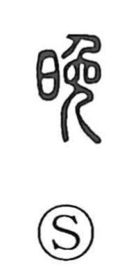

晩

Uncategorized
Kun: kure, osoi, okureru | On: ban
evening ・ dusk ・ late
Explanation
This is a phono-semantic compound: the sun element 日 sets the scene of declining light, while 免 serves as the phonetic, giving the on reading ban. The same phonetic appears in 挽 and 輓, both read ban, which confirms its sound value. The Shuowen glosses it as 莫, “dusk,” pointing to the time when the sun sinks. From this core image it means nightfall or dusk (kure, higure), and by extension “late,” “to be late,” and “later” with respect to time or age.